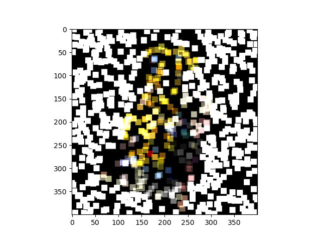
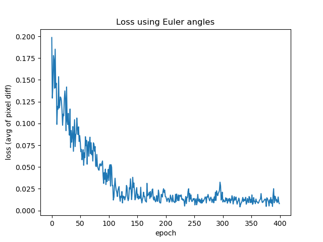
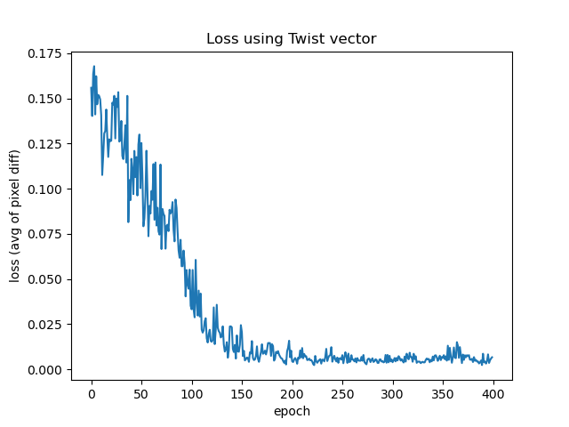
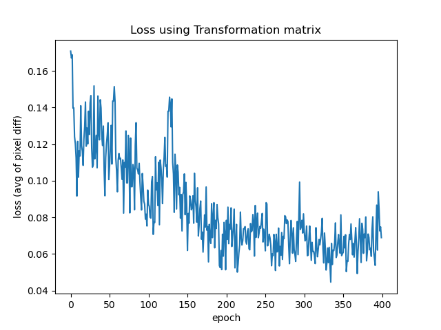
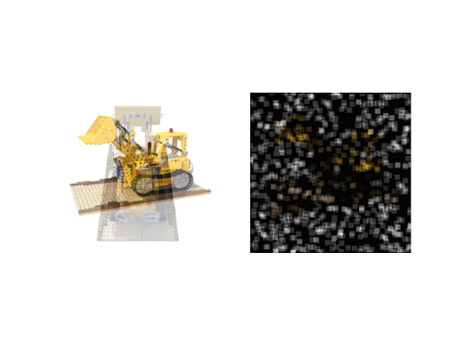
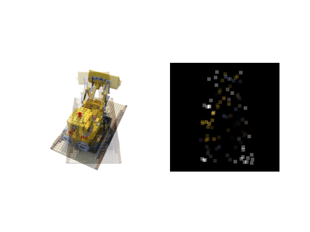
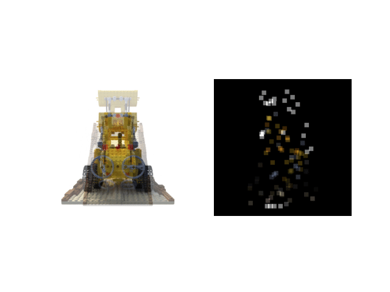
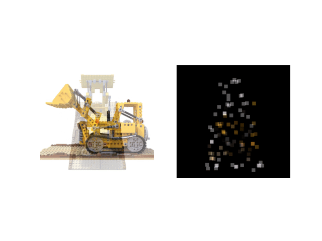

The first thing we did was load NeRF so we could render images from various viewpoints.
Unfortunately, NeRF took 11 seconds on average per render, which was not very fast.
To speed up the rendering process, we imported the svox library, which contains an
implementation of N3 trees, an octree-like data structure that allowed us to render
the images much more quickly. After incorporating svox, our renders sped up to
approximately 0 seconds.
Next, we wrote our pose optimization loop, as inspired by the iNeRF paper.
The purpose of this loop is to optimize our guessed parameters so that they
are as close as possible to those of the target image. To accomplish this,
our loop calculates a forward pass on a transformation input and backpropagates
on the loss between this calculated image and the target one. Using gradient
descent, we are able to adjust the values of our input parameters accordingly
to minimize the loss of our target image.
One of the biggest problems we ran into when implementing the pose optimization
loop was that raycasting to every single part of the image was too computationally
expensive to do for every single pass. Because of this, we had to implement a
pixel sampling scheme to choose specific pixels to sample, calculate the rays
from the camera to those pixels on the image plane, and generate an image from
these rays. When considering sampling schemes, we tried to choose a scheme that was
computationally inexpensive while still representing the image well, so that we
would only have a minor decrease in accuracy while maintaining a large speed up.
Some examples of sampling techniques we tried out are random sampling and
Canny sampling. Random sampling was consistently outperformed by Canny sampling,
which places a greater weight on edges. This is probably due to random sampling
often picking parts of the background, which is completely white and not representative of
the pose of the actual image. Because Canny sampling was
able to perform better and faster, leading to faster convergence of our
parameters, we ended up keeping it for the final product.
-

Random sampling.
-

Canny sampling.
We cycled through several different methods of parameterizing the camera pose in
order to determine which method is the most efficient and effective. At first,
we started off trying to optimize the 4x4 transformation matrix, but we realized
that this representation of a transformation was too general. This is because
transformation matrices need to be orthogonal, but the optimization loop doesn't
take this factor into account; each element of the matrix is tuned on its own.
Thus, we needed a representation of transformations where each parameter could
truly be any value within a certain range.
We decided to constrain this transformation matrix. One thing we experienced with the
transformation matrix parameterization is shearing. Since the objects in the
dataset are never sheared, only rotated, we wanted to remove the possibility of shearing in our pose
parameterization. For this, we turned to the parameterization that was used in the
iNeRF paper: exponential coordinates consisting of a twist vector and angle.
The twist vector representation is 6-dimensional, storing information about the
axis vector the twist is happening about as well as translation along that vector.
The angle specifies the amount of rotation around the axis.
We can constrain this parameterization even further by locking rotations to just
different axes (pitch and yaw) instead of a general rotation axis at any angle.
This was by far the best performing parameterization, as it works well even with
very few samples of the image generated by the forward pass.
-

Loss vs. epoch for Euler angle parameterization.
-

Loss vs. epoch for twist vector parameterization.
-

Loss vs. epoch for transformation matrix parameterization.
From this project, we learned many important lessons. First, we learned a lot about
working as a team, creating deadlines for ourselves, and following a schedule.
On the technical side, we learned that the parameters we use to represent the object
we are optimizing are just as
important as the optimization procedure itself, and we had to eventually change
our representation as described above to get our optimization
loop to properly work. Additionally, we learned that in order to speed up our
computationally intensive algorithm, we could
be clever about selecting a subset of our data. This made the algorithm much faster
while still retaining the important data. In this project, this was our sampling scheme,
however this is generally a good lesson to apply to advanced algorithms in many
fields.
Twist Parameterization
Here are some examples of our pose optimization loop being optimized on our image
with random sampling. Notice that the model has trouble optimizing when our
starting pose is very different from the target pose:
-

Random sampling with a small difference from the target pose.
-

Random sampling with a moderate difference from the target pose.
-

Random sampling with a large difference from the target pose.
Here are some examples of our pose optimization loop being optimized on our
image with Canny sampling:
-
Canny sampling with a small difference from the target pose.
-
Canny sampling with a moderate difference from the target pose.
-
Canny sampling with a large difference from the target pose.
Euler Parameterization
Here are some examples of our pose optimization loop being optimized Using
euler parameterization:
-

Canny sampling with a small difference from the target pose.
-

Canny sampling with a moderate difference from the target pose.
-

Canny sampling with a large difference from the target pose.
This project was Domas’s brainchild, who researched NeRF and iNeRF and pitched the
project to the rest of us. Domas was involved in nearly every aspect of the project and
was always around to offer advice. He worked most heavily on pose optimization as well
as generating all the results and testing everything, since svox only worked on his
machine.
Matthew came up with and implemented the various sampling algorithms, including Canny
and high-importance sampling, as well as experimenting with numerous other image
pre-processing and sampling techniques. Matthew also worked on the websites.
Greg worked on getting NeRF and svox working, ironing out the intricacies of the
libraries, as well as rendering and pixel sampling of the model. He also narrated,
edited, and published the videos and worked on the websites.
Nir worked on the pose optimization loop, including the forward and backward passes
and pose parameterizations. Nir and Domas often worked in tandem. Nir put together our
websites and translated our Google Docs to HTML.